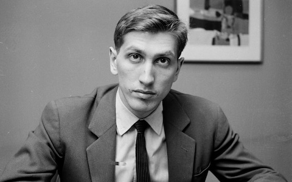
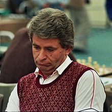
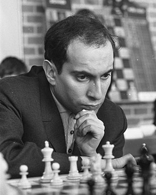
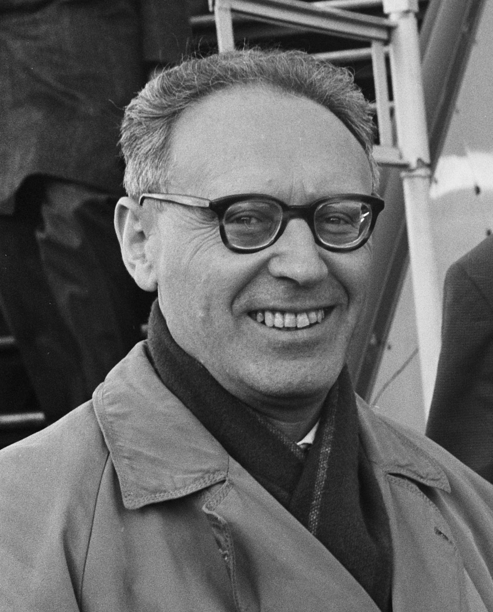

Bobby Fischer, właśc. Robert James Fischer (ur. 9 marca 1943 w Chicago, zm. 17 stycznia 2008 w Reykjavíku) – amerykański szachista, mistrz świata w latach 1972–1975, od 2005 obywatel Islandii.
Dzieciństwo
Fischer wychowywał się w domu bez ojca, ponieważ jego rodzice rozwiedli się, gdy miał dwa lata. Niektóre źródła twierdzą, iż jego biologicznym ojcem był węgierski fizyk Paul Nemenyi. Matka Regina pochodziła z Polski i zarabiała na życie jako scenograf teatralny albo pielęgniarka. Zasady gry w szachy poznał w wieku sześciu lat, czytając instrukcję dołączoną do kompletu szachów. Szachy zafascynowały go, próbował grać ze swoją starszą siostrą, lecz bardzo szybko okazało się, że jest ona zbyt słabym partnerem. Gdy miał trzynaście lat, jego matka poprosiła znanego szachowego trenera Johna Collinsa, by wziął go pod opiekę. Collins trenował wcześniej znanych szachistów, takich jak William Lombardy i Robert Byrne. Fischer spędzał dużo czasu w domu Collinsa, który w pewnym sensie zastąpił mu ojca. Więcej informacji tutaj
Boje z szachistami radzieckimi
W turniejach pretendentów Fischer spotykał się z koalicją arcymistrzów radzieckich, którzy nadawali ton międzynarodowym rozgrywkom szachowym na najwyższych szczeblach. Lata sześćdziesiąte to pasmo sukcesów Fischera w międzynarodowych turniejach i nieudane próby pokonania radzieckich arcymistrzów w turniejach pretendentów. Fischer zarzucał im niesportową postawę. W turniejach pretendentów zazwyczaj występowało kilku szachistów z ZSRR, którzy przede wszystkim koncentrowali się na wyeliminowaniu konkurencji z innych krajów, remisując ze sobą bez walki. Analiza wyników i relacje świadków tamtych wydarzeń potwierdzają stosowanie „zespołowej” taktyki w turniejach pretendentów m.in. przez Jefima Gellera, Paula Keresa i Tigrana Petrosjana. Na tym tle powstało wiele nieporozumień i konfliktów pomiędzy Fischerem a FIDE. Fischer postulował daleko idące zmiany w cyklu rozgrywek o szachową koronę. Jego postulaty spotykały się z ograniczonym zrozumieniem. Jako człowiekowi bezkompromisowemu trudno mu było się z tym pogodzić i już wtedy przyjaciele obawiali się, że z tego powodu porzuci szachy. Jednak pod jego naciskami FIDE zastąpiła turnieje pretendentów bezpośrednimi meczami zastąpił mu ojca. Po więcej informacji kliknij tutaj
  Mecz stulecia
Mecz stulecia odbył się w Reykjavíku, od lipca do września 1972, jednak do ostatniej chwili nie było wiadomo, czy w ogóle się odbędzie. Fischer stawiał coraz to nowe wymagania przed organizatorami, wycofywał się i wracał do negocjacji. Mecz początkowo obfitował w nieporozumienia i dalsze żądania Fischera, a jego fatalny, prosty błąd w pierwszej partii tylko podgrzał atmosferę. Na drugą partię Fischer nie przyszedł – poddał ją walkowerem i radziecka federacja szachowa zażądała od Spasskiego przerwania meczu. Ten nie zareagował, gdyż chciał wygrać mecz, w którym prowadził już dwoma punktami. Jednak Fischer stawił się na trzecią partię i ją wygrał. Ostatecznie zwyciężył w całym meczu w stosunku 12½ – 8½. Tym samym przerwał hegemonię radzieckich arcymistrzów i został szachistą numer jeden na świecie (po raz pierwszy w historii przekroczył granicę 2700 w rankingu Elo). Zainteresowany/a ? Kliknij mnie!
Ostatnie lata życia szachisty
Rozgrywając w 1992 roku mecz ze Spasskim w Jugosławii Fischer złamał przepisy USA, które nałożyły na ten kraj sankcje gospodarcze z powodu toczącej się wojny w Bośni. Przepisy przewidywały karę do 10 lat więzienia za to przewinienie i dlatego amerykański arcymistrz nie powrócił do USA. W 2004 na wniosek prokuratora federalnego skierowanego do Japonii za pośrednictwem Departamentu Stanu USA zatrzymany został w Japonii. Do zatrzymania doszło 13 lipca na lotnisku Narita w Japonii. Oficjalnym powodem było posługiwanie się nielegalnym paszportem USA podczas próby wejścia na pokład samolotu linii Japan Airlines, lecącego do Manili (stolica Filipin). Kolejne 9 miesięcy spędził w japońskim areszcie. W marcu 2005 przyjął islandzkie obywatelstwo (w kraju tym był osobą szanowaną od czasu meczu z Borisem Spasskim w 1972, dzięki któremu o Islandii stało się głośno w światowych mediach). Jednocześnie zrzekł się amerykańskiego, co spowodowało, że Japonia odmówiła deportacji do USA. Opuścił Japonię rok po wydarzeniach na lotnisku Narita, w lipcu 2005 i udał się na Islandię, gdzie pozostał do końca życia. Więcej znajdziesz tutaj
Droga do zostania mistrzem świata
| Rok | Miasto | Przeciwnik | Wynik |
|---|---|---|---|
| 1970 | Palma de Mallorca | 24 szachistów | 18.5/23 |
| 1971 | Vancouver | Mark Tajmanow | 6 - 0 |
| 1971 | Denver | Bent Larsen | 6 - 0 |
| 1971 | Buenos Aires | Tigran Petrosjan | 6.5 - 2.5 |
| 1972 | Reykjavík | Boris Spasski | 12.5 - 8.5 |
Jeżeli jesteś zainteresowany/a szczegółami dotyczącymi poszczególnych meczów zapraszam na kanał Agadmatora, gdzie można znaleźć wszystkie mecze Bobbiego Fischera w drodze po tytuł mistrza świata wraz z analizą! link do playlisty Bobbiego Fischera